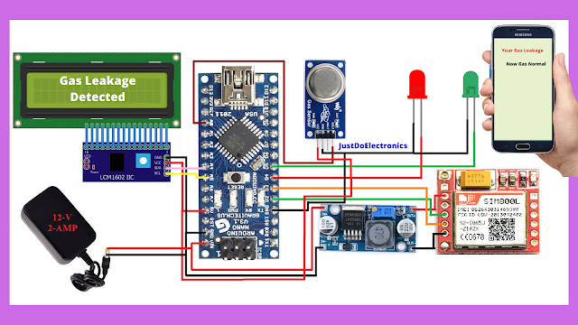
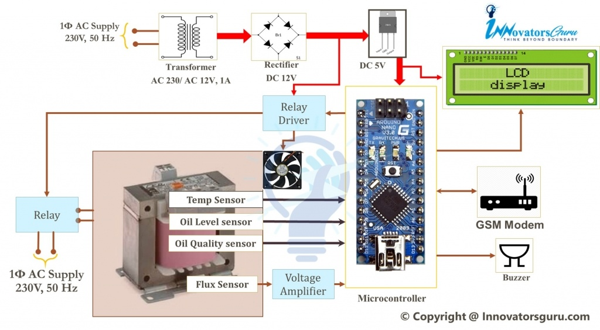
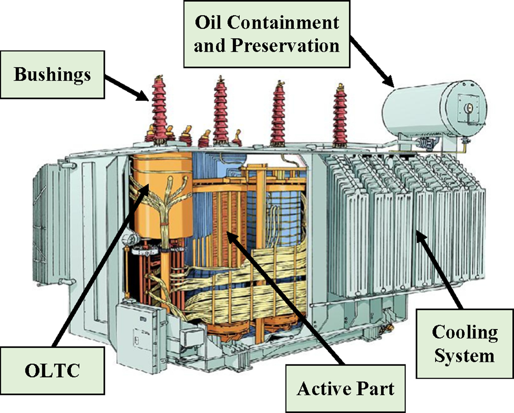
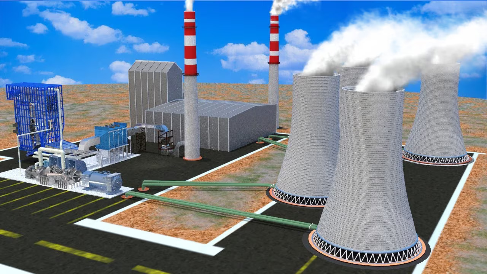
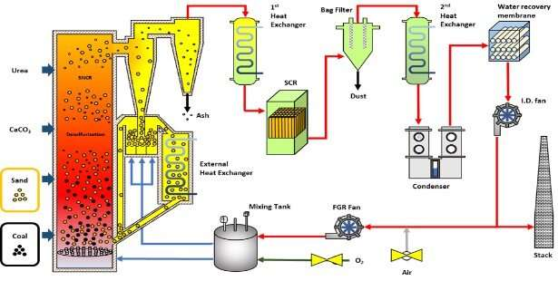

- SMART HYBRID POWER GENERATION AND WIRELESS CHARGING FOR E-VEHICLE
- GSM BASED GAS LEAKEAGE ALERT SYSTEM USING ARDUINO
- TRANSFORMER HEALTH MONITORING SYSTEM USING INTERNET OF THINGS
- STUDY ON THE POWER GENERATION TOOLS AND TECHNOLOGIES
As electric vehicles (EVs) have become increasingly popular as a mainstream transportation solution, opportunities to recharge the vehicle away from home have become a critical issue. Wireless charging EV is a type of EV in which charging is done using wireless power transfer (WPT) technology, which does not require any physical contact in the process of transferring electric energy. WPT has been successfully applied for charging various handheld devices, such as medical devices, electronic toothbrushes, and smartphones. It has also been widely used for automated material handling systems in semiconductor fabrication and flat-panel display production lines (Covic and Boys, 2013) In This Project we show two idea First is Wireless Charging E-Car and Second is E-Car Charging Station So First I explain E-Car Working Then E-Car Charging Station E-Car - In this project we show wireless charging E-Car Charging System . When E-Car park on station then there are Tesla coil give the power of car battery without any wire ,this working call wireless charging system ,So car battery automatic Charge And Car go to other side of station or out of station then wireless charging automatic off . We include in Car upper side solar charging system for e-car battery ,when car running or stop any where then there are sunlight and then sunlight came to solar penal and solar penal convert the sunlight to electricity and electricity go into the battery and E-Car battery charging start , And if we want to charge our E-Car directly then our E-car battery charger connected to AC Board and charger connected to E-Car and E-car Battery Start Charging . This is Our Idea for Advance E -Car For Charging. Goals : The goals of the survey are clear. It summarizes the state-of-the-art in ongoing research on wireless charging EVs, promoting a systems view of the technology to foster interdisciplinary dialogue
"LPG (Liquefied Petroleum Gas) is a popular cooking fuel. LPG gas is a flammable mixture of hydrocarbon gases (composed of mostly propane and butane) used as a fuel in house appliances and vehicles and in industries. It is odourless gas due to which Ethanethiol is added as powerful odorant, so that leakage can be easily detected. LPG is one of the alternate fuels used now days. Sometimes liquefied petroleum gas is also known as LPG, LP gas, Auto gas etc. This gas is commonly used for heating appliances, hot water, cooking, and various other purposes also. LPG is also used as an alternate fuel in vehicles because of soaring in the prices of petrol and diesel. Compressed natural gas (CNG) (methane stored at high pressure) is a fuel which can be used in place of gasoline (petrol), Diesel fuel and propane/LPG. CNG combustion produces fewer undesirable gases than the fuels mentioned above. It is safer than other fuels in the event of a spill, because natural gas is lighter than air and disperses quickly when released. CNG is mainly used for powering vehicles but it is also used for household and industrial purpose as an alternative for LPG gas and other fossil fuels due to is non-polluting nature. Some people have low sense of smell, may or may not respond on low concentration of gas leakage. In such a case, gas leakage security systems become an essential and help to protect from gas leakage accidents. A number of research papers have been published on gas leakage security system Embedded system for Hazardous gas detection and Alerting has been proposed where the alarm will be activated immediately, if the gas concentration exceeds normal level. There have been many accidents that have been caused due to leakage of gas and have caused loss of life and property. Gas leakage detection is not only important but stopping leakage is equally essential. This paper provides a cost effective and highly accurate system, which not only detect gas leakage but also alert (Beep) and turn off the gas supply as well as turn off main power and gas supplies, further it will send an SMS. GSM module is used which alert the user by sending an SMS. In order to provide high accuracy gas sensor MQ 2 has been used.
Transformer is an important asset in transmission and distribution network. Its operation and control are important aspects, which determine the reliability and quality of power supply. As large number of transformers are spread over wide area in the present power system, it is difficult to monitor the condition of each transformer manually. Therefore, development of Condition Monitoring System for transformers is done. This paper presents design & implementation of IoT based mobile embedded system to monitor the temperature of transformer oil and detection of various gases like Methane, Carbon monoxide, Hydrogen, Acetylene, Ethane etc. This monitoring system is programmed with some predefined instructions to check the abnormal conditions based on their established values. This remote monitoring system using IoT will help to identify problems before any failure occurs. This system can be an advanced step in automation, which does not depend on manual testing & human dependency. As it is a wireless communication system, it is cost effective. Temperature monitoring provides fundamental protection for the transformer by preventing operation in overheated condition as overheating leads to insulation damage and reduces transformer life expectancy. Thus, condition monitoring offers improved transformer protectionTransformer is an important asset in transmission and distribution network. Its operation and control are important aspects, which determine the reliability and quality of power supply. As large number of transformers are spread over wide area in the present power system, it is difficult to monitor the condition of each transformer manually. Therefore, development of Condition Monitoring System for transformers is done. This paper presents design & implementation of IoT based mobile embedded system to monitor the temperature of transformer oil and detection of various gases like Methane, Carbon monoxide, Hydrogen, Acetylene, Ethane etc. This monitoring system is programmed with some predefined instructions to check the abnormal conditions based on their established values. This remote monitoring system using IoT will help to identify problems before any failure occurs. This system can be an advanced step in automation, which does not depend on manual testing & human dependency. As it is a wireless communication system, it is cost effective. Temperature monitoring provides fundamental protection for the transformer by preventing operation in overheated condition as overheating leads to insulation damage and reduces transformer life expectancy. Thus, condition monitoring offers improved transformer protection
 Power generating systems are generally treated as heat engines to convert heat input into work, hence to produce electricity at a sustained rate. Heat input is supplied by burning fossil fuels (coal, oil and natural) and biomass, or processing nuclear fuel, or harvesting thermal energy from renewable energy sources. For example, in a conventional coal-fired power plant (the term power station is also used), the energy of coal is eventually converted into power. In general, conventional power stations comprise multiple generating units which are designed tooperate at their nominal load when they function optimally. There are a number of well-known power generating systems denoted as conventional, namely the spark ignition engine, compression-ignition engine, steam Rankine or organic Rankine power plant, combustion turbine power plant, combined cycle power station, nuclear power station, and hydroelectric power station. All these conventional power generating systems (CPGSs) primarily produce mechanical work which is transferred to subsequent systems in the form of shaft rotation. In vehicles, shaft power developed by engines is transferred to the traction system for propulsion.
 